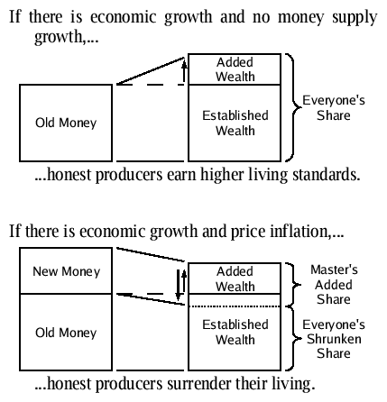

|
Reality Doug says: |
“Welcome to Reality” |
|
I broadcast my talk radio show “Welcome to Reality” on WSBF-FM Clemson. I have a profile at radioflag.com, and sometimes I flagcast there during shows! My handle is ‘djrealitydoug’ on twitter and the email at live.com. On radioflag it's plain ‘realitydoug’. Below this section is a sketch of the mental framework I have of Western society and human nature. It delimits and qualifies the sort of political, economic, and cultural analysis and opinion I share on my show. The views I express here, like on the show, are not necessarily the views of any person not me or of any organization at all. I do not presume to speak for others. Wisdom is the skill of keen social interpretation. Common sense is common wisdom shared by a people worthy of civilized freedom, and quite uncommon these days. The leaders of our civilization inculcate norms that are not even an imperative systemization of common sense to rectify useful idiots with we the people, as if it could be done fully and adequately. No, the useful idiot is being used for the destruction of we the people to the advantage of a financial elite. They don't just have the money; they have the definition of money. Wisdom is thought from the very beginning, from the axioms that can only be evaluated philosophically, but that is enough. A person worthy of freedom first proofs the choice of contextual abstract framework used to evaluate ideas BEFORE evaluating the ideas themselves. As physical technology advances, the mental technology of free citizens must also advance if they are to preserve their freedom. Your neighbor's stupidity—or prohibitively-expensive-to-cure ignorance, the practical difference being nothing—is the greatest of dangers to free and civilized men. The lead of the story of the second great Western civilization is: kings' bankers -> democracies' bankers -> bankers' democracy. I do not say civilized women for reasons of mental sophistication regarding the interplay and development of capacities emotional and rational. Civilized politics is the purview of men who can embody it far more easily without women than with—the reverse statement by sexes being diametrically opposite the truth. Women have never of themselves produced viable politics, and thus demonstrably can't as a general rule at the very least. A viable matriarchal politics is wholly unknown to anthropology. Cognitive science and psychology show women are intrinsically, down to the sex chromosomes, communal to a rule-bending destructive fault. Blaming competition with patriarchal politics does not fix the inviability of matriarchic economics. It is impossible to indefinitely give to each according to need unless needs are dehumanized. The nanny state is dehumanizing, and so moribund and transitory. Universal health care eventually requires death panels, actuarial approval guidelines, some sort of natural selection, because the universe doesn't support something for nothing. Women crying a river does not change that. Axiom of Credo: Credo is Latin and means ‘I believe’. Without a chip implant, every human brain is functionally independent, and every human mind is endowed with autonomous capacity abdicated ultimately only by consent. (You live mentally in a personal psychological universe breeched only by neurological lines of communication into a physical context shared and similarly beheld by fellow humans.) Axiom of Identity: You can distinguish between and identify items and qualities of your mental and physical environments. Consciousness denotes relevant, discriminatory observation of oneself and one's context. Axiom of Causality: Every event within natural existence happens for natural reasons. The laws of nature provide invariants making function in the physical universe possible by unique specificity of state and of state change. Process is subject to bias of choice and discrimination of possibility. Axiom of Conservation: Physical resources are at all times specific to one condition on one unidirectional course of causality. Conservation makes competition, progress, cooperation, and discrimination mandatory. Morality is defined by nature as selective reciprocity, retribution, and ruin in the pursuit of peace through strength. All other morality is man-made political pretense. | |
|
Copyright © 2012 ‘Reality’ Doug |
|
Last updated 05 May 2012. |